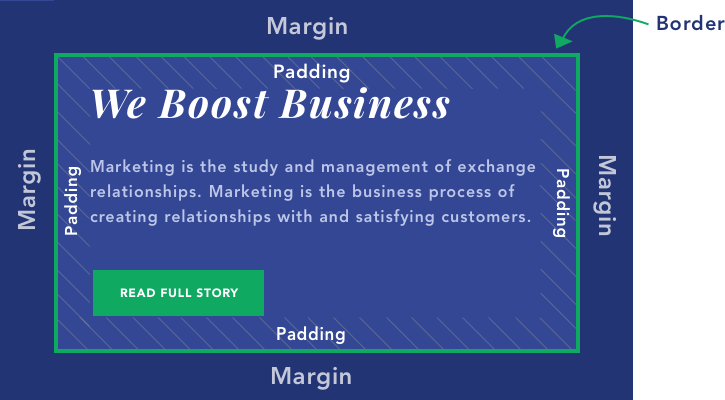

Sprint 2 Tech
What is the difference between Margin, Border, and Padding?
As you can see from the illustration: Padding is what creates a space inside the element/container; Margin is what creates a space around the element/container. They both influence the layout in different ways, so let's dive in deeper. Note: Between margin and padding is another parameter - border. It will adjust together with padding and margin. But it's what sets them apart. Also, it's the only “visible” parameter of all these. Others create a space with what's already there.
What Is Padding? Padding, as stated before, is the increased space inside the content area. It will make the whole block bigger but from the inside. What Is Margin? Margin is what creates the gap around the content block, by “pushing” the content away. It's always outside of the border.
Margin vs Padding You might be thinking - Ok, but if I don't use different colors or images? I can just choose whichever. Unfortunately, there are cases where you can use only one or the other. Here are some key elements that set them apart.